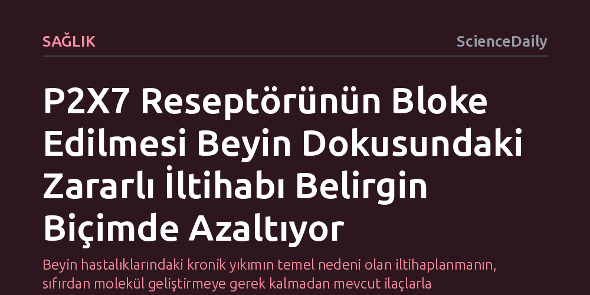

SAGLIK · ScienceDaily · 2026-10-08
Araştırmacılar, P2X7 reseptörünü bloke ederek insan beyin dokusundaki yıkıcı iltihaplanmayı önemli ölçüde azaltmayı başardı. Halihazırda mevcut ilaçlarla hedeflenebilen bu mekanizma, Alzheimer, Parkinson ve kafa travması gibi hastalıklar için doğrudan tedavi potansiyeli taşıyor.
Beyin hastalıklarındaki kronik yıkımın temel nedeni olan iltihaplanmanın, sıfırdan molekül geliştirmeye gerek kalmadan mevcut ilaçlarla hedeflenebileceğini gösteriyor.

Alzheimer, Parkinson, travmatik beyin hasarı ve hatta majör depresyon gibi birbirinden çok farklı görünen nörolojik ve psikiyatrik tabloların merkezinde ortak bir biyolojik süreç yer alıyor: kronik iltihaplanma. Beyin dokusu bir hasar ya da stresle karşılaştığında bağışıklık sistemi koruyucu bir tepki üretmeye çalışıyor; ancak bu iltihap kontrolsüz bir döngüye girdiğinde sinir hücrelerini doğrudan tahrip eden yıkıcı bir güce dönüşüyor.
Birmingham Üniversitesi araştırmacıları, beyindeki bu zararlı iltihap dalgasını tetikleyen kritik bir biyolojik kontrol noktasını ortaya çıkardı. P2X7 adı verilen hücre reseptörünü inceleyen ekip, bu alıcının bloke edilmesiyle insan beyin dokusundaki iltihaplanma tepkisinin belirgin biçimde gerilediğini deneysel olarak gösterdi. Üstelik bu mekanizmayı baskılayabilecek ilaçların halihazırda var olması, keşfin klinik uygulamaya aktarılmasını son derece hızlandırabilir.
Beynin yerleşik bağışıklık bekçileri olan mikroglia hücrelerini laboratuvarda canlı tutmak ve işlevlerini incelemek nörobilimin en büyük zorluklarından biriydi. Çünkü bu hücreler doğal beyin ortamından çıkarıldıklarında temel biyolojik niteliklerini çok kısa sürede kaybediyordu. Araştırma ekibi bu engeli aşmak amacıyla insan kanından elde edilen periferik monositleri mikroglia benzeri hücrelere dönüştüren yenilikçi bir yöntem geliştirdi.
Bu hücresel dönüşüm, insan yaşlanması sırasında beyinde doğal olarak gerçekleşen hücresel süreçleri taklit ediyor. Elde edilen model üzerinde yapılan incelemelerde, hücreler hasar gördükçe P2X7 reseptörünün sitokin salınımını tetiklediği belirlendi. Bir reseptör antagonisti uygulanarak bu alıcı kapatıldığında, bağışıklık hücrelerinin yaydığı yıkıcı iltihap sinyalleri başarılı şekilde kesintiye uğratıldı.
Yapay hücre modellerinde elde edilen laboratuvar başarıları, insan dokusunun karmaşık mimarisine uyarlandığında çoğu zaman başarısızlıkla sonuçlanır. Ancak Birmingham ekibi araştırmayı yalnızca hücresel kültürlerle sınırlı tutmadı; bulgularını beyin cerrahisi ameliyatları sırasında alınan canlı insan beyin dokusu kesitlerinde de sınadı.
Canlı insan beyin dokusunda uygulanan P2X7 engelleyici moleküller, laboratuvarda görülen koruyucu etkiyi birebir tekrarlayarak dokudaki enflamasyon yanıtını ciddi oranda düşürdü. İnsan dokusundan alınan bu doğrudan sonuç, P2X7 blokajının teorik bir varsayımdan ibaret olmadığını, insan beyninde bilfiil işleyen güçlü bir fizyolojik mekanizma sunduğunu kanıtladı.
Bu buluşun en umut verici yönü, tıp dünyasının sıfırdan molekül tasarlamak ve bunların onlarca yıl süren güvenlik testlerini beklemek zorunda kalmayacak olmasıdır. P2X7 reseptörünü hedefleyen bileşikler farmakoloji literatüründe zaten bilindiği için, mevcut ilaçların yeni bir tedavi amacıyla yeniden konumlandırılması mümkün hale geliyor.
Araştırmanın bir sonraki adımı, iltihaba bağlı doku yıkımını önleyecek etkili bir ilaç seçeneği bulunmayan travmatik beyin hasarı hastaları ile Alzheimer ve Parkinson hastalarını kapsayan klinik denemelerin başlatılması olacak. Klinik fazların da başarılı olması durumunda, nörodejeneratif hastalıkların seyrini yavaşlatacak yeni bir tedavi paradigması doğabilir.